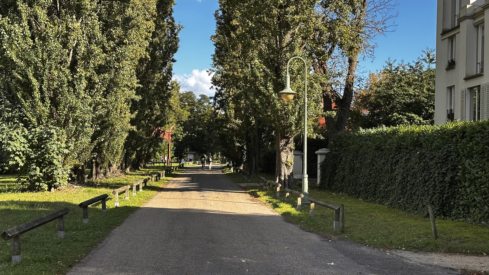
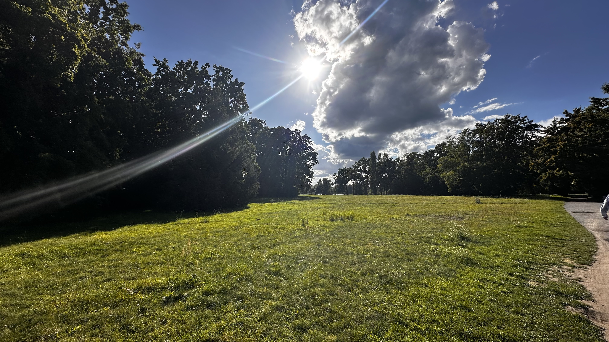
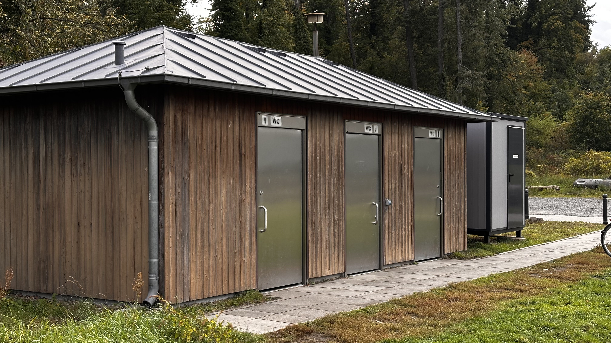

Parks und Schlösser in Potsdam-Babelsberg Kultur, Natur und Erholung am Ufer der Havel
Eine Reise durch die UNESCO-Welterbe-Parks und Kulturdenkmäler am Ufer der Havel. Entdecken Sie die historischen Schlösser, Landschaftsgärten und ihre besonderen Merkmale – mit detaillierten Informationen zu Örtlichkeiten, Anfahrt, Öffnungszeiten und aktuellen Gegebenheiten vor Ort.
Die 4 Areale – Eine Landschaft, vier Erlebnisse
Von der historischen Parkanlage bis zum königlichen Schloss – entdecke die verbundenen UNESCO-Welterbe-Areale am Ufer der Havel.
Jeder Bereich hat seinen eigenen Charakter, seine eigene Geschichte und besondere Highlights.
Areal 1
Park Babelsberg
Der 124 Hektar große englische Landschaftspark am Ufer der Havel ist ein Meisterwerk der Gartenkunst.
Seit 1990 UNESCO-Welterbe. Gestaltet von den legendären Landschaftsarchitekten Peter Joseph Lenné und Fürst Hermann von Pückler-Muskau.
Besondere Highlights:
→ Uferweg Nord – Panoramablick über den Tiefen See
Das neugotische Sommerschloss von Kaiser Wilhelm I. thront majestätisch über der Havel.
Erbaut 1833-1849 nach Entwürfen von Karl Friedrich Schinkel, Ludwig Persius und Johann Heinrich Strack.
Ein frühes Meisterwerk der Landschaftsgestaltung am Heiligen See. Angelegt ab 1787 für Friedrich Wilhelm II. im Stil englischer Gärten.
Hier fand 1945 die Potsdamer Konferenz statt.
Der südlichste Teil der UNESCO-Welterbe-Landschaft an der Glienicker Brücke.
Ein verstecktes Juwel mit italienisch inspirierter Architektur und romantischen Ausblicken über die Havel.
Von gehobener Küche bis zum schnellen Imbiss – entdecke alle Restaurants, Cafés und Imbisse
in Fußnähe zum Park. Perfekt für die Einkehr nach deinem Parkbesuch.
Historisches Bootshaus am Havelufer aus dem 19. Jahrhundert. Heute Event-Location mit romantischem Blick aufs Wasser.

Zypressen-Allee
Beeindruckende Baumallee im Stil englischer Landschaftsgärten. Gestaltet von Lenné und Pückler-Muskau.

Liegewiesen
Weitläufige Grünflächen mit herrlichem Blick auf die Havel. Die Liegewiesen sind perfekt zum Entspannen, Picknicken und Sonnenbaden an warmen Tagen. Besonders am späten Nachmittag, wenn die Sonne durch die alten Bäume bricht, entsteht eine magische Atmosphäre. Die Wiesen bieten ausreichend Platz für Familien, Sportler und Ruhesuchende.
Praktisches vor Ort
Echte Bilder zeigen dir, was du vor Ort vorfindest. So kannst du deinen Besuch besser planen.

Toiletten
Öffentliche WCs sind ausgeschildert. Standorte an den Haupteingängen.
Radweg: Über Glienicker Brücke & Haveluferweg Fahrradparken: Abstellplätze am Haupteingang Route von Potsdam HBF: 4,5 km (ca. 20 Min.)
Schöne Radroute entlang der Havel.
Achtung: Im Park nur auf asphaltierten Hauptwegen fahren – Wanderwege sind für Radfahrer verboten!
Parktipps für Autofahrer
Tipp 1: Wochenend-Besucher sollten vor 10 Uhr anreisen oder auf ÖPNV umsteigen.
Tipp 2: Über 1200 weitere Parkplätze in der Umgebung (siehe Karte unten).
Tipp 3: Park + Ride: Parkplatz am S-Bahnhof Griebnitzsee (kostenlos), dann 15 Min. Fußweg.
Parkordnung & Regeln im Detail
Was ist erlaubt, was verboten? Hier findest du alle wichtigen Regeln für Park Babelsberg –
mit Hinweisen, wo andere Parks in Potsdam mehr Freiheiten bieten.
Radfahren & Wege-Kategorien
✓ Erlaubt: Asphaltierte Hauptwege
Radfahren ist auf den breiten, asphaltierten Hauptwegen erlaubt (z.B. vom Haupteingang zum Schloss,
Allee parallel zur Havel). Diese Wege sind mit Fahrrad-Symbol gekennzeichnet.
⚠ Nur Schieben: Wanderwege & Uferweg Nord
Schmale Wanderwege (z.B. Uferweg Nord, Parkpfade zu Flatowturm) sind NUR für Fußgänger.
Radfahrer müssen hier schieben oder werden abgemahnt.
✗ Verboten: Historische Sichtachsen & Wiesen
Auf Liegewiesen, historischen Sichtachsen und Querwegen ist Radfahren strikt verboten.
Bußgeld bis 55€.
Wegekarte & Beschilderung
Vor Ort sind alle Wege mit Schildern gekennzeichnet. An Haupteingängen findest du Übersichtskarten
mit farblicher Markierung: Grün = Radweg,
Orange = Fußweg,
Rot = Verboten.
Drohnen & unbemannte Fluggeräte
✗ Strikt verboten
Laut SPSG-Parkordnung sind unbemannte Luftfahrtsysteme (Drohnen, Modellflugzeuge)
in allen Schlosspark-Anlagen verboten – auch mit Drohnenführerschein.
Bußgeld bis 5.000€.
Baden und Schwimmen ist im Park Babelsberg (Havel, Tiefer See) laut SPSG-Parkordnung verboten.
Gründe: Keine Badeaufsicht, Strömung, Schiffsverkehr, Wasserqualität nicht getestet.
Geheimtipps & offizielle Badestellen
1. Strandbad Babelsberg (ca. 1,5 km südlich)
Offizielles Freibad mit Sandstrand, Liegewiesen, DLRG-Aufsicht.
Mai–September geöffnet. swp-potsdam.de
2. Havel-Nuthe-Wasserweg (wilder Zugang)
Lokale baden an der Havel südlich vom Park (außerhalb SPSG-Gelände).
⚠ Auf eigene Gefahr, keine Aufsicht.
3. Heiliger See (Neuer Garten, 2 km nördlich)
Ebenfalls offiziell verboten, aber Anwohner nutzen Uferstellen.
⚠ Nicht empfohlen (häufige Kontrollen).
Picknick & Grillen
✓ Picknick auf Liegewiesen
Picknicken ist auf den ausgewiesenen Liegewiesen erlaubt (große Wiese südlich vom Schloss,
Uferbereiche mit Blick auf Havel). Bitte Müll mitnehmen – keine Mülleimer vor Ort.
✗ Grillen & offenes Feuer verboten
Grillen, Lagerfeuer, Gaskocher sind im gesamten Park verboten (Brandschutz, Denkmalschutz).
Bußgeld ab 150€. Tipp: Kaltes Picknick vorbereiten.
Vergleich: Wo ist Grillen in Potsdam erlaubt?
✓ Volkspark Potsdam: Grillen auf ausgewiesenen Flächen erlaubt ✓ Templiner See Wiesen: Freies Grillen (außerhalb Naturschutz) ✗ Alle SPSG-Parks: Grillen verboten (Sanssouci, Babelsberg, Neuer Garten, Pfaueninsel)
Hunde im Park
⚠ Anleinpflicht
Hunde sind im Park Babelsberg erlaubt, müssen aber an einer kurzen Leine geführt werden
(max. 1,5 m). Freilauf ist verboten – auch für gut erzogene Hunde. Bußgeld ab 55€.
✓ Hundekot-Beutel mitbringen
Kotbeutelspender gibt es nur an wenigen Eingängen. Bitte eigene Beutel mitbringen und Kot entfernen.
Mülleimer befinden sich an Hauptwegen.
Freilauf-Alternativen in Potsdam
✓ Hundeauslaufgebiet Volkspark: Eingezäunter Bereich für Freilauf ✓ Templiner See Uferwege: Freilauf in ausgewiesenen Zonen ✓ Ravensberge (Werder/Havel): Großes Freilauf-Areal, 15 Min. Fahrt
Weitere wichtige Regeln
🏕️
Camping & ZeltenVerboten – auch Übernachten in Hängematten/Schlafsäcken
🎵
Musik & LautsprecherNur in Zimmerlautstärke – Andere Besucher nicht stören
⚽
Ballsport & FrisbeeAuf Liegewiesen erlaubt – Nicht an historischen Bauwerken
🛴
E-Scooter & RollschuheSchrittgeschwindigkeit – Auf Hauptwegen erlaubt, nicht auf Wanderwegen
🌳
PflanzenschutzNicht betreten – Bepflanzte Bereiche & Blumenbeete sind tabu
📸
Fotografie & FilmenPrivate Nutzung erlaubt – Kommerzielle Shootings brauchen SPSG-Genehmigung
Vollständige Parkordnung:
Die offizielle Parkordnung der SPSG ist an allen Eingängen ausgehängt und online verfügbar:
spsg.de/park-babelsberg
Location-Finder für die Potsdamer Parklandschaft
Finde WCs, Restaurants, Parkplätze und ÖPNV-Haltestellen in allen 4 Bereichen:
Park Babelsberg, Schloss Babelsberg, Neuer Garten und Park Glienicke.
Mit Standort-Navigation und Live-Fahrplanauskünften.